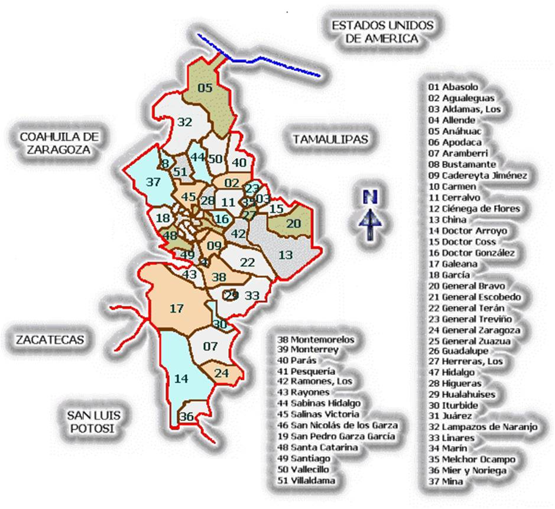
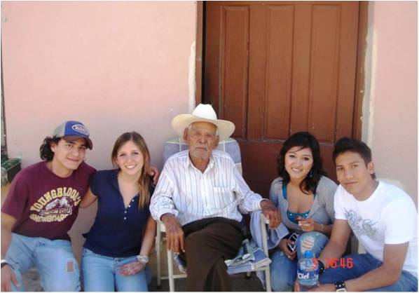
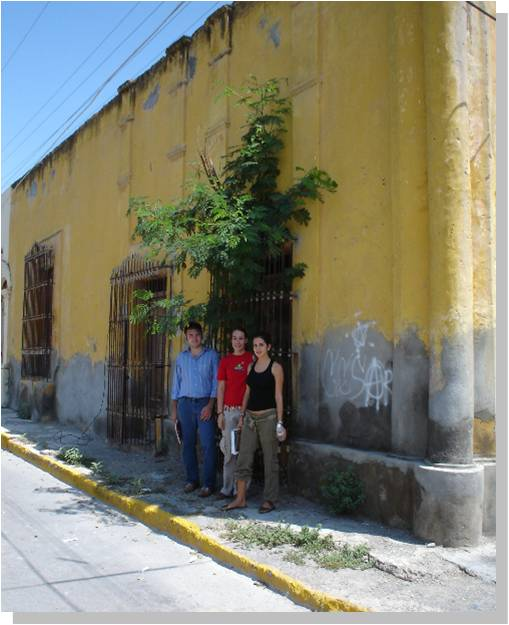
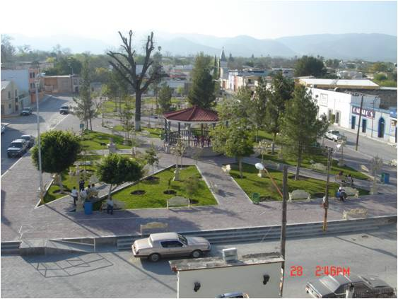

Instituto Tecnológico y de Estudios Superiores de Monterrey
Escuela de Arquitectura, Arte y Diseño
Sustentabilidad Ambiental
Nombre: ______________________________________________ Fecha: ____/____/______ Grupo: ______
Arquitectura Vernácula en el Noroeste de México
Caso de estudio: Municipios de Monterrey.




Visita un municipio de Nuevo Léon.
Nota: Las fotografías son necesarias en cada apartado
Abstract
Introducción
Capítulo 1. Antecedentes.
- 1.1 Ubicación geográfica
- 1.2 Orografía
- 1.3 Hidrografía
- 1.4 Clima
- 1.5 Ubicación del sitio
- 1.6 Características históricas
Capitulo 2. Arquitectura Vernácula.
- 2.1 ¿Por qué se considera arquitectura vernácula?
Capítulo 3. Descripción Espacial.
- 3.1 Distribución y orientación de los espacios.
Capítulo 4. Materiales.
- 4.1 Techos
- 4.2 Muros
- 4.3 Pisos
- 4.4 Ventanas y puertas
Capítulo 5. Protección Solar.
- 5.1 ¿Cómo se protege la casa del sol?
Capítulo 6. Ventilación.
- 6.1 ¿Cómo se encuentra ventilada la casa?
Capítulo 7. Condiciones en meses estibos.
- ¿Cómo se mantiene la casa en meses estibos?
Capítulo 8. Ventajas de la arquitectura vernácula.
- Ventajas de la arquitectura vernácula.